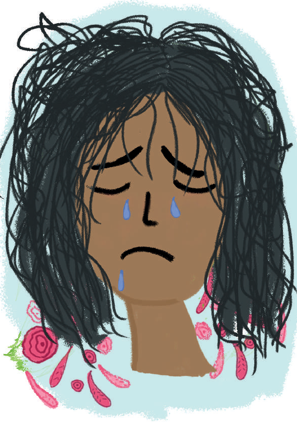

Reconocer el estado cognitivo
Además de hacer actividades que ayuden a cuidarse cognitivamente, es importante conocerse e identificar señales que reflejan un agotamiento mental.
- Bajo rendimiento en actividades diarias (trabajo, escuela, deportes, etc.).
- Dificultad para comunicarse.
- Baja autoestima.
- Problemas con familia o personas significativas.
- Comportamientos y expresiones deliberadas (ira o llanto sin razón aparente).
- Insomnio.
- Dolor de cabeza.
- Descuido de apariencia física.
- Sensaciones de agotamiento.
- Sentirse sobresaturado/a de información.
